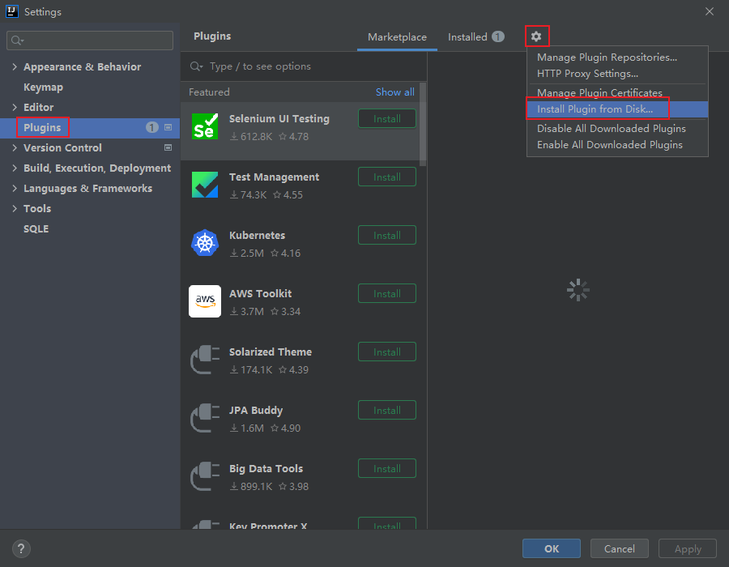
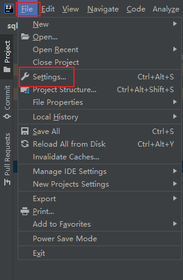
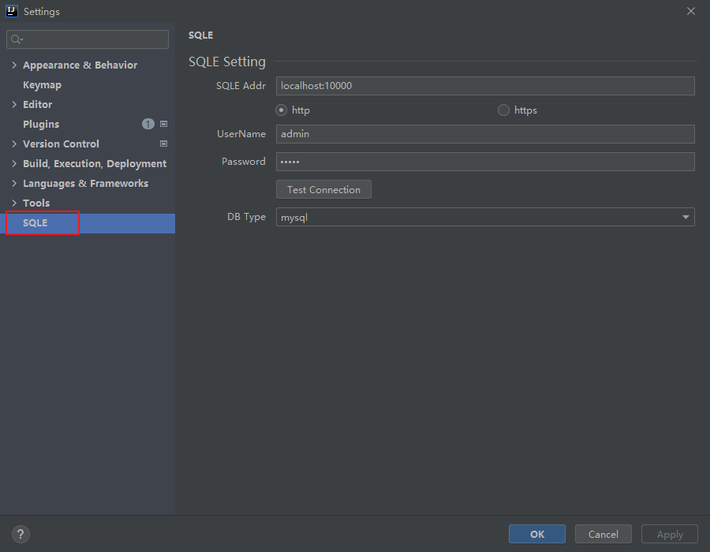
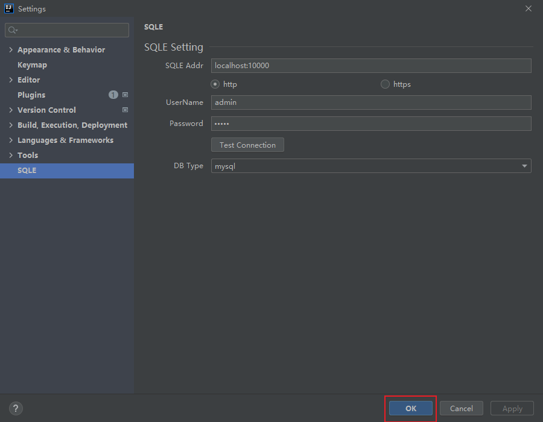
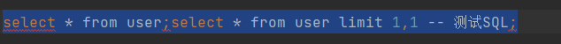
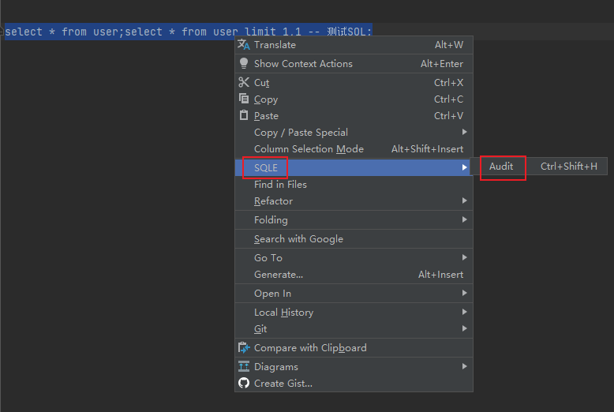
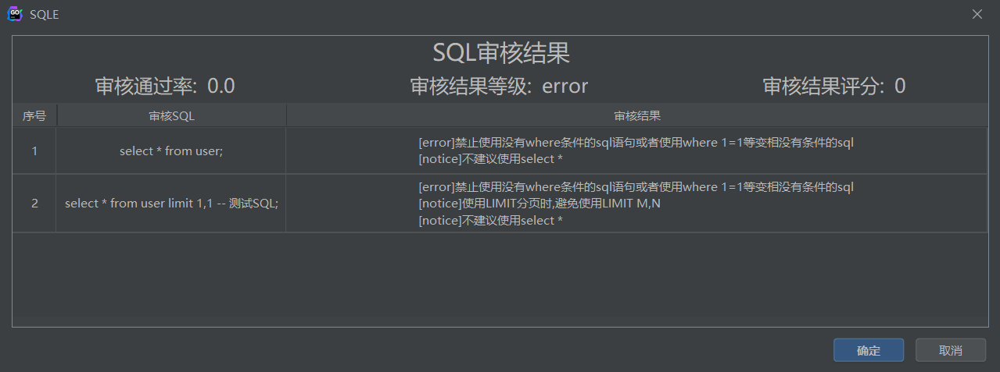

SQLE-Jetbrains-Plugin
简介
该项目是SQLE 的 IDEA 审核插件 , 该插件满足开发人员在开发阶段进行实时自助式的静态SQL审核，实现开发阶段审核上线等各个SQL开发阶段的SQL开发规范。
使用方式
下载地址
安装说明
将插件拖放到 IDEA 或 其他类似软件中(如Goland), 插件即可完成自动安装
也可以在 [File] - [settings] - [Plugins] 中手动安装 
使用说明
配置插件
点击 [File] - [Settings] 进入设置界面

在左侧菜单最下方应该有一项 [SQLE], 点击进入

填写SQLE环境信息, 详细参数说明见下方参数说明, 点击 [OK] 保存

使用插件
选中需要审核的SQL, 可以同时选中多条SQL

点击右键, 选中 [SQLE] - [Audit] , 也可以使用快捷键 [Ctrl] + [Shift] + [H]

插件会以弹窗的形式将审核结果进行展示

配置参数说明
| 配置项 | 配置项说明 |
|---|---|
| SQLE Addr | SQLE 服务地址, 格式为 IP:Port |
| http/https按钮 | 指定通过http的方式连接SQLE还是通过https的方式连接 |
| UserName | 登录SQLE使用的用户名 |
| Password | 登录SQLE使用的密码 |
| Test Connection | 测试连接是否成功, 将会尝试登录 |
| DB Type | 当其他配置正确时此下拉框会自动获取支持审核的实例类型, 选择后会使用此实例类型的审核规则进行审核 |
常见问题解答
1. 为什么插件配置项中的 [DB Type] 点击时偶尔会卡一下
答: 这是因为点击下拉框时下拉框会连接SQLE获取支持的实例类型, 这个过程可能会出现网络延迟
2. SQLE在审核时使用的规则模板是什么
答: SQLE会根据设置中指定的数据库类型, 选择对应类型的默认模板进行审核, 且只会使用默认模板中的静态审核规则
3. 我没有SQLE环境可以使用这个插件吗
答: SQLE有演示环境, 如果只是想尝试一下这个插件可以连接 演示环境
插件支持哪些IDE
答: Jetbrains家的所有软件和 [Android Studio] 都是支持的
SQLE插件的配置存在什么地方
答:
{用户根目录}\AppData\Roaming\JetBrains\{idea版本号对应目录}\options\SQLESettings.xml
| 变量 | 说明 |
|---|---|
| 用户根目录 | 一般为 C:\Users 目录下和用户名同名的目录, 内部一般包含 '桌面', '下载' 等文件夹 |
| idea版本号对应目录 | 一般为 软件名版本号 的格式, 如社区版idea 2022.1版本对应目录名为 IdealC2022.1 |